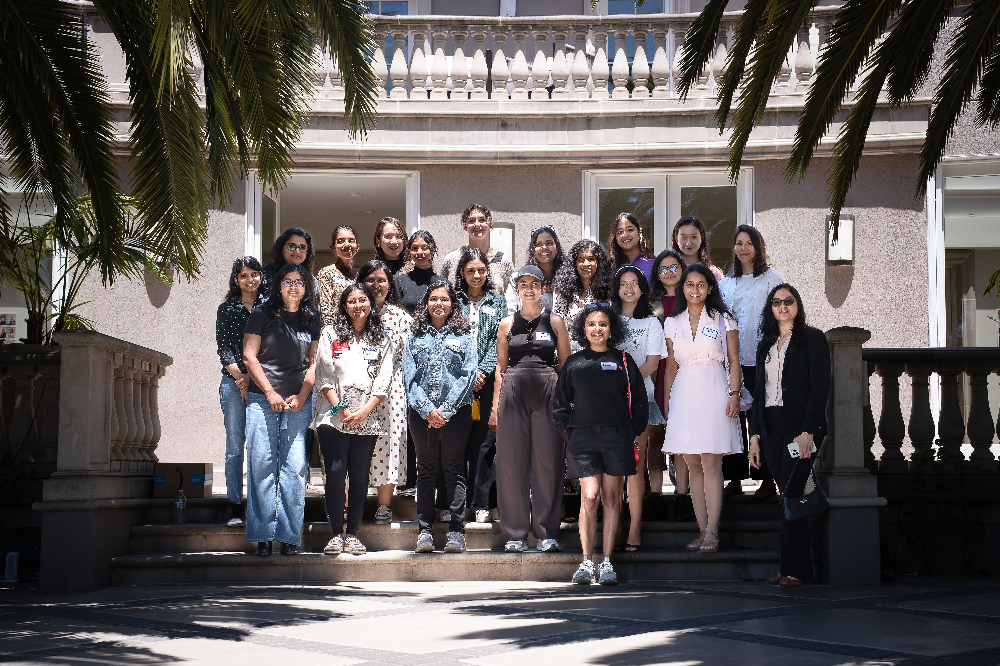

Community · Frontier AI
Women building at the edge of what AI can do.
A community for women and non-binary researchers and builders working at the frontier of AI — bringing together phenomenal people to foster connections, and explore new frontiers together.

Activities
How we gather
Regular gatherings designed to foster real connection and technical depth — not just networking.
01
Speaker discussions
Founder and research talks from women shaping the frontier of AI, followed by open Q&A.
02
Technical workshops
Deep-dives into architectures, infrastructure, and the hard problems of the field.
03
Publishing guidance
Peer support for research papers — from first draft to submission and review.
04
Meet & greets
Casual gatherings to build real connections across the community, for members and allies alike.
Mission
Created from a deep desire to bring phenomenal women together.
Women in Frontier AI began as a community group, born from a simple idea: the women working at the frontier of AI — in safety, infrastructure, semiconductors, and scientific computing — should know each other.
We foster connections, host conversations with founders and researchers, and create space to understand and explore new frontiers of AI together — open to women and allies alike.
Read our story →Get involved
Working at the frontier? Come find us.
Whether you're a researcher, engineer, or ally — our LinkedIn community is where we share events, talks, and opportunities first.